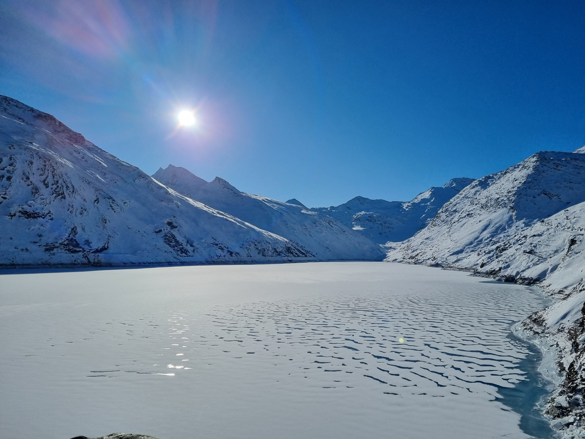

Saas-Almagell to Mattmarksee

Saas-Almagell to Mattmarksee
Summary
- Trail: 14km long, 540m altitude change, easy
- Starting point: Saas-Almagell
- Route details: Schweizmobil 875
- Additional details: Saas-Fee region
A snowshoe hike that leads to a dam with a
tragic history. On August 30, 1965, 88 construction workers, were buried under 2,000,000 m³ of ice and debris by a glacier collapse of the Allalin glacier. No other reservoir in Switzerland claimed so many victims during construction.
The route starts from the outskirts of the charming village of Saas-Almagell, guiding you through a gently sloping ascent towards the picturesque Lake Mattmarkt. A few parking spaces are available before the starting point. Besides the 540-meter change in altitude, the trail poses no additional challenges. Actually, it is a road, accommodating even postbuses during the summer, eliminating concerns about falls or technical difficulties.
In the later part of January 2023, the reservoir had frozen and brisk winds creating a unique atmosphere around the lake. Despite the challenging weather conditions, it proved to be an ideal location for a rest before embarking on the return journey. Otherwise, benches and barbecue areas are scattered along the route, enhancing the overall experience.
Contact: love.outdoor.freedom@gmail.com
{kind=link}
{kind=link}
{kind=link}
{kind=link}
{kind=link}
{kind=link}
{kind=link}